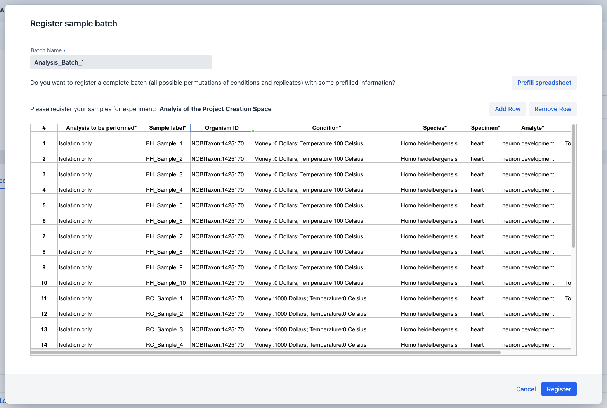
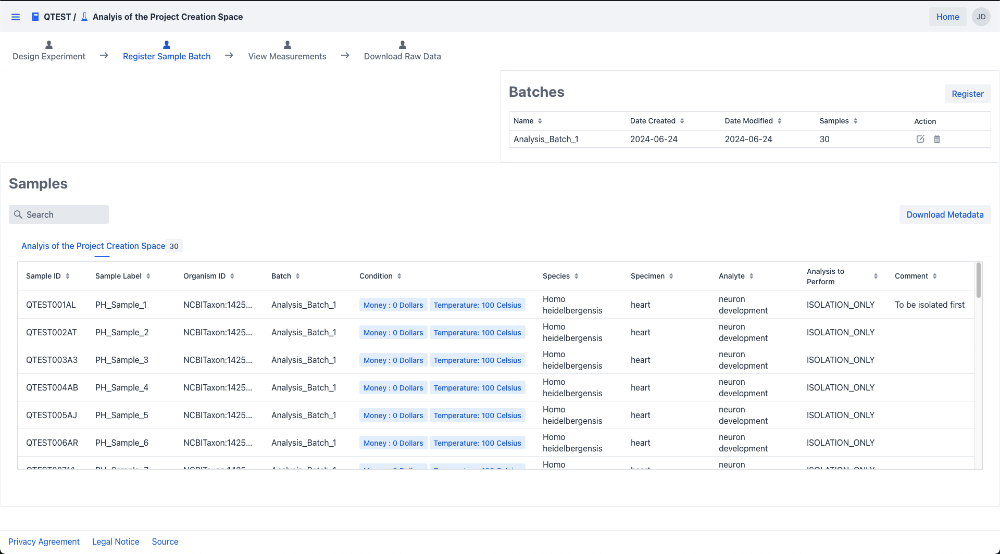
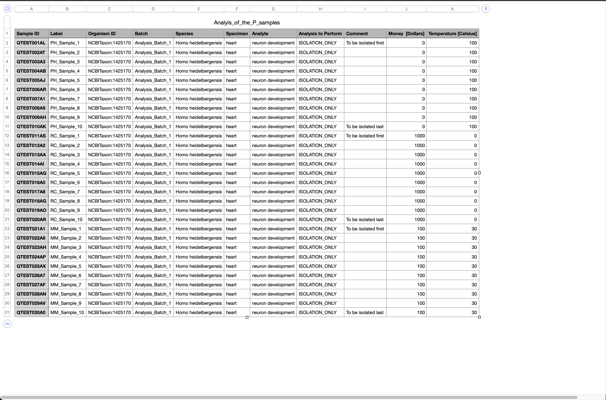

Batch Registration
To register a new batch, start by navigating
into the batch summary view.

Email Notification
Upon successful batch registration, all project collaborators will automatically receive an email with a link to the created batch.
Within this view, click on the register button within the batch registration component on the top right to
trigger the batch registration dialog.

Within this dialog you have the possibility to provide the minimal required batch and sample information.
The minimal batch information consists of:
- Batch name
- The sample metadata information for at least one sample.
Sample Registration
The sample specific mandatory metadata information has to be defined within the spreadsheet of the dialog. Each row within this spreadsheet represents one sample within your batch. You can add or remove rows via the dedicated control buttons on top right of the spreadsheet. For a high amount of samples, we recommend to click on the "Prefill spreadsheet" button to trigger an automatic prefilling of the spreadsheet with the information provided during experiment creation
Prefill Sample Information
The "Prefill Spreadsheet" functionality will generate one row each according to the number of biological replicates and conditions defined during experimental group creation.
Mandatory metadata properties can be recognized via the asterisk next to the column header and consist of:
- Analysis to be performed
- Sample Label
- Condition
- Species
- Specimen
- Analyte
Preselected Information
Cells within the "Species", "Specimen" and "Analyte" columns provide the values specified during experiment creation. They can be automatically prefilled, if only one species, specimen, analyte was chosen, respectively. Cells within the "Condition" column provide a selection of the values specified during experimental group creation
Optionally, feel free to also store a comment of your choosing and an Organism ID properties for each sample.

Once all the required information has been provided you can trigger the sample batch registration via the "Register" button below, which will register the metadata information for your batch in our system.
Sample ID
During batch registration each sample will be provided a unique Sample ID, distinguishing it from other samples within the system.
The batch information for each batch is shown in the top right batch component, while the sample specific information is shown in the grid of the center sample component. 
Should you notice any issues with your registered batches, you can always edit or delete via their respective icons within the action column of grid in the batch component.
Batch Metadata Download
You can download the sample specific metadata via the download metadata button on the right within the sample component, which will provide the metadata as a tab seperated *.txt file. 